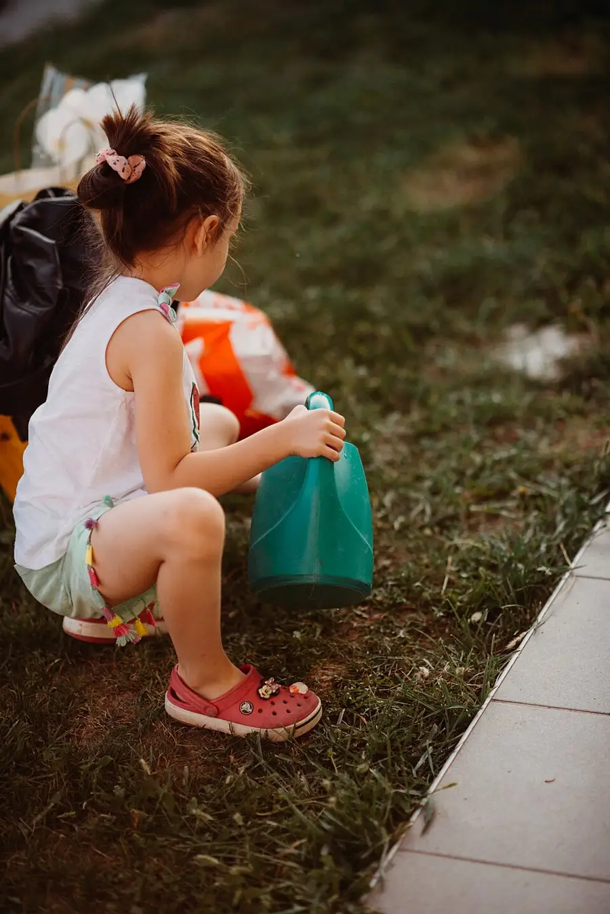

Watering Can Plant Round
One small watering can, half full, carried with two hands to the real plants: pour slowly, empty it, and the plants have been watered by you.
Before you begin
- Ages
- 3–6
- Group
- 2–10 kids
- Time
- 15–25 min
- Where
- Outdoors
- Prep
- Some prep needed

Setup
Check the round yourself first with the can half full: walk it. A can that drips down your leg at a walk is too full, and a plant route crossing steps or slopes with a carried can is a route to shorten now. Half full is the working amount at three: heavy enough to feel like a job, light enough to arrive. Know which plants actually need water today; watering plants that do not is rehearsal, and kids can tell the difference by the soil. Show them dry soil before you start.
Materials
- a small watering can (child-size, with a rose head if you have one)
- plants in pots or a garden bed that actually need water
- a tap, butt, or bucket of water (for refills, adult-managed)
Steps
- At the first plant, teach the pour yourself: two hands on the can, tip slowly, water landing on the soil at the bottom of the plant, not on its leaves from a height. Say the one rule while you do it: 'Two hands, walking feet, water on the soil.'
- First carrier: fill the can half full together, and the kid carries it, two hands, at a walk, to the next plant, with you alongside and the group following as the watering crew. A spill on the way is water landing early, nothing more; it gets named as such and the round continues.
- The pour is the carrier's own: they tip, they watch the soil change colour as it drinks, they stop when the can is empty or you call 'that plant has had its drink'. Empty-can shake at the end is traditional and required.
- Crew jobs rotate with the can: the next kid refills with the adult, the next carries, and the kid who just poured becomes the soil-checker, finger touched gently to the soil, 'wet now' reported to the group. Every kid on the round has a job on every plant.
- Finish at the last plant with the empty can held up: the crew names every plant they watered, in order, pointing back along the round. Then the can is emptied of its last drops onto the driest soil anyone can find, and hung up by its final carrier.
Variations
Easier: Two plants, close to the water source, and the adult carries the can back empty. The pour and one short carry are the round.
Harder: A longer round with a halfway refill, and the soil-checker reports 'still dry' or 'wet now' before each pour so the crew decides where the water goes.
Safety
Half-full cans only, two hands, walking feet. A swinging can of water is heavy enough to pull a small kid off balance. Water goes on soil, never at faces or over other kids, and wet paths get walked around, not through: the round's own spills make the ground slippery behind it. Hands wash after garden work, every time.
Tried this? Rate it
Your ratings live in this browser only. Nobody else can see them. There are no community ratings here; every star on this card is yours.
Rate this activity, add a note, or write a reflection
Quick reflection
Optional, saved with your rating, and exported with "Copy my week".
Full activity card,